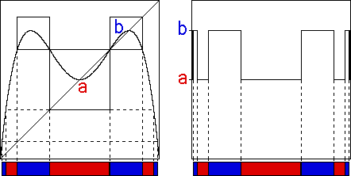

To start, take the s-value for which the logistic map has a superstable
We plot the graph of L2, recalling points of a 2-cycle for L are fixed points for L2.
In the left side of the picture below, graphical iteration from any initial point in the central red interval will generate a sequence of points converging to the fixed point a.
Similarly, points taken from the surrounding two blue intervals will iterate to the fixed point b, and so on.
|  |
Because the limiting function can be obtained by iterating the logistic function many times, the limiting function must take points in the red intervals to the fixed point a, and must take points in the blue intervals to the fixed b.
Magnifying the sides of the picture around
The right side of the picture shows the approximation to the graph of the limiting function obtained by iterating the logistic map 64 times. To within the pixel width of the screen, the agreement with our prediction is perfect.
Return to the universal Function.